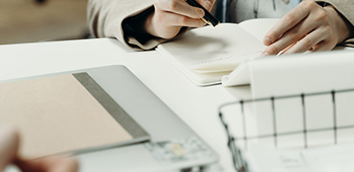

PROJEKT
Wiem, umiem, robię Czyli ja na rynku pracy

Projekt Wiem, umiem, robię, czyli ja na rynku pracy jest adresowany do uczniów klas II i III XXI Liceum Ogólnokształcącego im. Hugona Kołłątaja w Warszawie.
Jest połączeniem badania społecznego [opinii], przeprowadzonego przez młodzież w środowisku uczniów własnej szkoły, panelu dyskusyjnego z udziałem młodzieży i specjalistów ds. edukacji i rynku pracy, pełniących również funkcję wykładowców i trenerów, oraz warsztatów tematycznych z udziałem uczniów.
Cel projektu
Celem planowanego projektu jest przybliżenie uczniom specyfiki zmieniającego się rynku pracy z akcentem na uświadomienie posiadanych już zasobów – umiejętności i kompetencji – oraz wzmocnienie poczucia swojej skuteczności w celu budowania postaw przedsiębiorczych.
Kluczowe wydarzenia
- projekt badawczy – badanie opinii metodą jakościową zaprojektowane, przeprowadzone, opracowane i przygotowane do zaprezentowania wszystkim beneficjentom projektu na etapie II projektu przez reprezentację uczniów biorących udział w projekcie;
- debata przedstawicieli samorządu uczniowskiego prezentujących wyniki projektu badawczego ze specjalistami związanymi z rynkiem pracy: pracodawcą, pracownikiem HR i frelancerem;
- warsztaty tematyczne z aktywnym udziałem młodzieży prowadzone przez specjalistów – trenerów.
Zakres i znaczenie
Udział młodzieży w projekcie ma stać się impulsem do refleksji oraz zapoczątkować myślenie o tym, jaka jest waga kompetencji i kwalifikacji w stawaniu się aktywnym uczestnikiem rynku pracy. Projekt ma uruchomić myślenie o tym, jak można budować własną przedsiębiorczą postawę, która skutkuje zmianą nastawienia i wiarą, że osoba aktywna, biorąca odpowiedzialność za rozwój swojej drogi edukacji, rozwijająca cenione kompetencje i mająca określony cel oraz drogę dojścia, jest już dziś cennym i ważnym ogniwem zmieniającego się rynku pracy.
Ponadto projekt ma uchronić osoby, które odkładają decyzję o wyborze ścieżki edukacyjno-zawodowej, przed wydłużaniem się czasu wejścia na rynek pracy spowodowanym nierealnym postrzeganiem oczekiwań pracodawców i fałszywą oceną własnych zasobów i kompetencji.
Osoby prowadzące projekt
Magdalena Kamieniecka
kamieniecka.magda@gmail.com
Agnieszka Pawlińska
agnieszka.pawlinska@poczta.onet.pl
Publikacja i wsparcie
Pierwsza edycja projektu została zrealizowana w XXI L.O. im. H. Kołłątaja w Warszawie w 2015 roku. Wiosną 2016 roku rozpoczęła się druga edycja projektu z kolejnym rocznikiem uczniów tej samej szkoły.
Na podstawie doświadczeń z I edycji projektu Fundacja ZwrotNa przygotowała publikację metodyczną pt. MY, MŁODZI NA RYNKU PRACY, adresowaną do nauczycieli podstaw przedsiębiorczości, WOS-u oraz szkolnych doradców zawodowych. Publikację można pobrać bezpłatnie na stronie fundacji w zakładce Publikacje.
Projekt „Wiem, umiem, robię” jest współfinansowany przez Biuro Edukacji m. st. Warszawy.